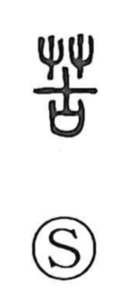

苦

Kun: kurushii, kurushimu, kurushimeru, nigai, nigaru | On: ku
bitter ・ to suffer ・ hardship ・ very
Explanation
苦 is a phono-semantic character: the grass radical signals a plant, and 古 serves as the phonetic, giving the on reading ku. In the Shuowen it names a specific plant, identified as nigana (Ixeris dentata), renowned for its intense bitterness; from this, the character came to mean “bitter,” and by extension can function as an intensifier meaning “very.” The sense of mental and physical hardship is linked to the older writing of kurō as 劬労, where 劬 depicts a body bent in toil with a plow-like implement, evoking weary farm labor. Sharing the same on reading, 苦 drew upon that image of toil and came to be used for “painful” experience and “to suffer.”